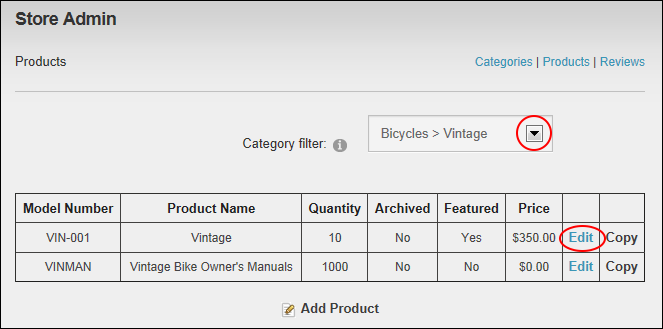

Deleting a Product
Catalog Managers can delete a product from the Store using the Store Admin module. Deleted products cannot be restored. If you plan to offer the product in the future you should archive the product instead. See "Managing Product Archiving"
- On the Store Admin module, click the Products link.
- At Category, select the category the product belongs to.
- Click the Edit link beside the product.

- Click the Delete link. This displays the message "Are You Sure You Wish To Delete This Item?"
- Click the OK button.